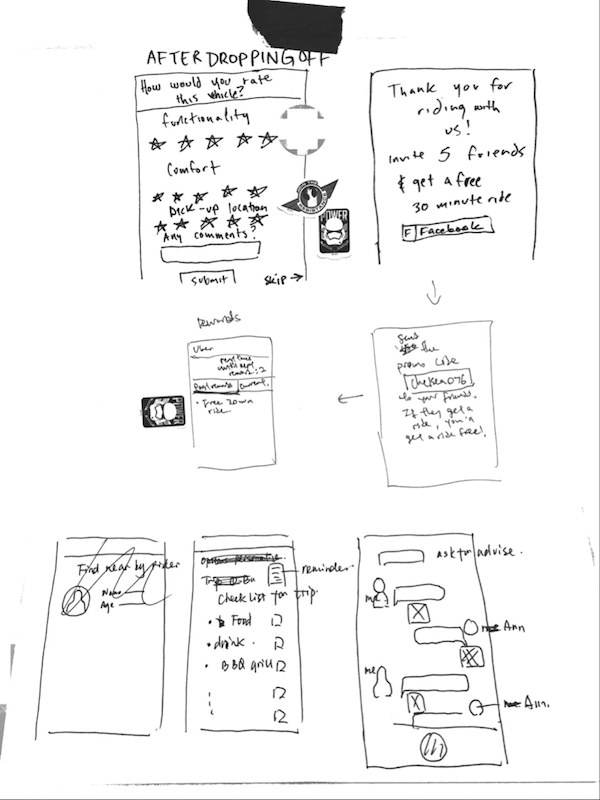
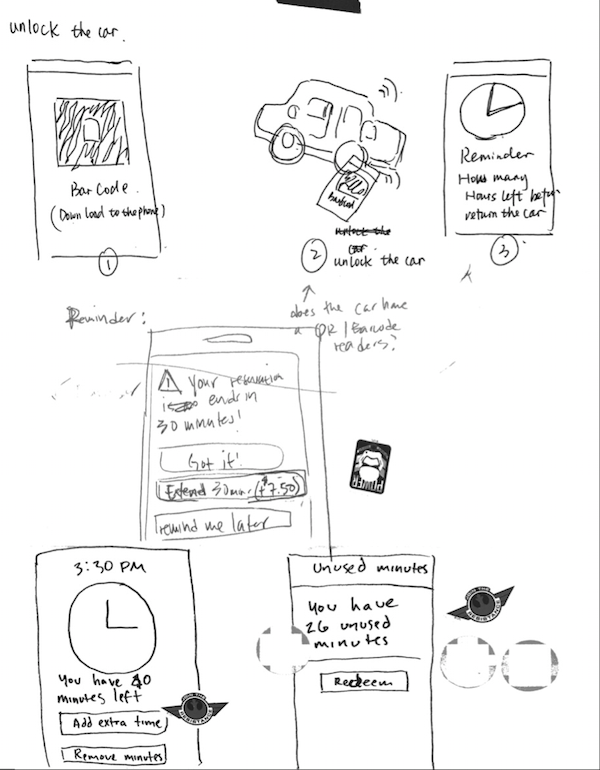
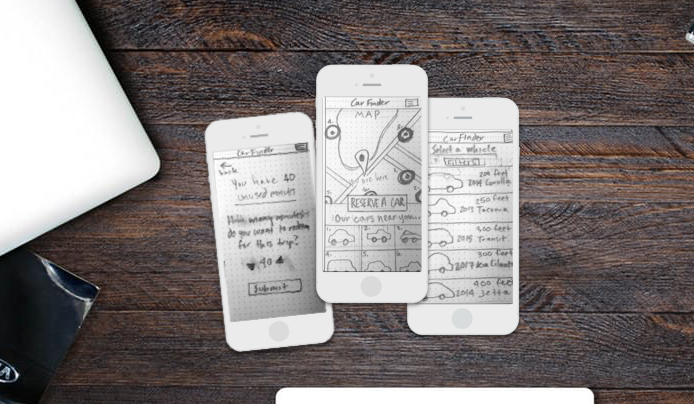
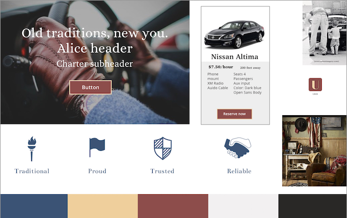

Car sharing is part of the larger sharing economy movement. With more and more millennials being reluctant to buy large purchase items such as cars, the concept of carsharing is a market opportunity that Uber wants to explore.
Car sharing is part of the larger sharing economy movement. With more and more millennials being reluctant to buy large purchase items such as cars, the concept of carsharing is a market opportunity that Uber wants to explore.
I worked on a design team to completely recreate the structural interface of the current landing page, onboarding and user dashboard of Rent Application. We worked in an iterative process in three sprints broken up by research and design phases.
UX
Jason Bergeron
Jeff Gombos

Rent Application is an online software company that provides a responsive web rental application and automatic screening service. Rent Application is one of the only services on the market that offer only rental applications and tenant screening services. Eric, the CEO of Rent Application, laid out his business goals for us. Rent Application is focused on targeting landlords that do not need a bundle service. For this reason, they consider themselves not direct competitors to those companies which provide a “bundle like” service. They wish to stay within the realm they are in. They currently have approximately 30,000 users registered, but have seen a sharp drop off of users after creating an account. At the time we were hired as designers, they were seeing 84.5% of users who hit the Rent Application landing page bounce entirely. This is an extremely high rate of potential business loss and showed us right away that a possible part of our scope would be revising the landing page as users were not compelled enough to go further than that upon visiting the site.
(INSERT ANALYTICS GRAPH SCREENSHOT)Although our client was seeing a sharp decline in new users, 24% of people who hit the signup page actually do sign up. Current users of Rent Application agree that the landing page made it hard to understand what the purpose of the service was, but once they got past that and gave it a shot, they told us that Rent Application was a very important piece in their day-to-day work lives. This was proof to us that there was definitely potential to bring more users in, we just needed to define how we would accomplish this.
In our initial kickoff, Eric requested we focus on the onboarding and dashboard in our scope, as where most users exist in the site. He was also open to any other areas that we suggested needed work on, so if time in our design sprint allowed, we planned to test and redesign the landing page because of the analytics on initial bounce rate we were given.
Learning about the rental application screening market
Analyzing The Competition
(INSERT COMPETITOR MATRIX)
We compared six services’ interfaces and features that Eric considered competitors to Rent Application. We found a major takeaway to be true:
Almost none of the sites we looked at had a modern, user-friendly experience, except for Cozy. The rental application landscape is crammed with clunky, out of date websites that are confusing and frustrating. We see this as a great opportunity for Rent Application to stand out amongst the current market.
After conducting the competitive analysis, we began to assess Rent Application. Why is there such a massive drop-off? Here’s what we initially hypothesized before conducting further research:
We assumed that the dashboard is confusing, price options are unclear and the onboarding process is too lengthy.
We sought to validate these hypotheses by moving forward and conducting our first round of user interviews and testing using Rent Application’s current website.
When scheduling user interviews, we sought out carsharing users in our demographic range to better understand the motivations, expectations and factors that play a role when choosing a carsharing service. We spoke with users who don’t own a vehicle, as well as users who use carsharing in addition to owning their own vehicles.
Research Question 1: How and why do users decide to use car rental or car sharing services? What are their goals, motivations and thought processes? We learned that carsharing is widely used for trips when people don’t want to put miles on their own cars and running errands for non-car owners Carsharing is a 1.1 billion dollar industry as of 2015 and is likely to grow to 6.5 billion by 2024. The car rental industry was valued at 72.74 billion dollars in 2015. There is plenty of room for growth in the carsharing industry, we just had to discover what it’s lacking.
Research Question 2: What pain points and inefficiencies do users encounter when using existing car sharing services? Users worry about hidden fees, which was an issue two carsharing users encountered in the past when using a major competitor in the industry. Another concern was regarding convenience of pick up and drop off locations. Many users don’t want to be confined to having to make round trips to drop their vehicle back in the same location that they picked up in. People who use carsharing generally liked it; the problem was getting them to come back regularly.
Research Question 3: For non-consumers of carsharing services, what obstacles prevent their participation in carsharing services? We conducted an online survey completed by 25 participants. A surprising consensus from the survey was that the majority of users that hadn’t used a carsharing service in the past hadn’t done so because they didn’t have the knowledge of what carsharing was.

Another main obstacle was that users who do not own cars have other reliable methods of transportation already established that are already reliable as well as more cost-effective, such as public or manual transportation for short distances.
We conducted one interview with a subject matter expert who manages a car rental service.
“Avis owns one of the carsharing companies and I see the numbers every month… It’s not impressive. We don’t see carsharing as a threat to our rental company, they don’t offer the same flexibility and rewards that renting a car provides. Our users feel a sense of brand loyalty, carsharing isn’t as established” - Mick, airport rental service manager
This validated our initial assumption that a reason carsharing is not as successful as car rental services is because of a lack of customer loyalty rewards and flexibility.

We began to compile and group our user data with affinity diagramming. This showed us where users goals, pain points and needs lie in regards to carsharing. We crafted an initial overall scope that would guide our focus for the following three weeks. My group and I reflected on our research questions and user data. After the process of iteratively narrowing down what the most important findings were, we uncovered the major question that would end up being the main focus for our scope:
How will we put users in greater control of car sharing scheduling and costs, so that they will feel more comfortable, in control and confident using car sharing, and thus choose to incorporate it more frequently and regularly into their travel routine?
We created two personas that were the synthesis of our user data. Each persona is guided by their own individual motivations, needs and scenarios when it comes for seeking out a vehicle. Chelsea is a young millennial who uses carsharing frequently for running errands and going out on weekends. Peter embodies a family man who relies on carsharing if something goes wrong with his own vehicle. He is very cost-conscious, but will do whatever it takes to make sure he can get his family around town safely.

Crafting our personas allowed us to stay aligned as a group for when we would soon diverge and create individual designs of our prototypes. We crafted a customer journey map applicable to either persona based off our gathered user data and their experiences using existing carsharing companies.
One of our initial assumptions was that millennials would be our target users, so we planned to design with a focus on Chelsea. This assumption shifted quickly, as our experience consisted of speaking with mostly non-millennials; the majority of millennials we requested to interview said they had never used or heard of car sharing. This guided our decision to design with Peter in mind as we continued into our design phase.
We crafted and refined a set of four principles to base our forthcoming divergent designs on in order to stay aligned in terms of core values.

Moving into our design sprint, we started brainstorming and creating concepts as a team to uncover our core features.

What we found most important:
Rewarding our users - A rewards program similar to what car rental companies provide

A guided reservation process - Reservation process would begin from selecting a pin point on the map
Upfront costs - Making final costs differentiate from their surroundings so users would feel confident in what they’re paying
After building concepts off each others ideas and voting on what we found most important to include, we branched off and created individual paper prototypes. We tested 5 participants and had them complete two main tasks on each of our paper prototypes. From our concept testing we validated that the rewards program was very well received by all users. We also learned that price played the most prominent factor for users when choosing a vehicle, as they always chose to sort based on lowest price first.
Our next task was to take our feedback and findings from our first round of concept testing and create mid-fidelity wireframes. We tested another five participants and had them give qualitative and quantitative feedback on what their experience was when interacting with each of our prototypes. We tested the following task flows:
Onboarding
Selecting pick-up location

Reserving a vehicle

Redeeming rewards
In this round of testing, functionality and fidelity were increased allowing us to see what structure allowed users to complete the important tasks most efficiently. My prototype scored highest in the overall survey results, so we chose to take pieces from the other prototypes that tested well and used my wireframes as the skeletal base that we would continue to increase in fidelity as we moved towards creating finalized high-fidelity prototypes.
Finding Our Way To the Final Prototype
Before increasing fidelity on anything, we each created style tiles of our UI themes to use as a guide to follow while creating our individual high-fis. One of my fellow teammate’s design was received well overall by users. As her style tile demonstrates, it encapsulates an essence of sophistication and timeless elements. Our research and user data supported the decision to base our designs with Peter in mind. The dark interface with pieces of rich burgundy and gold struck well with our more experienced users, which validated our thought process of Peter being our primary user.
We still needed to decide on a finalized name for our mobile app. We were trying to stay aligned with Uber’s current line of services - UberEats and UberGo - which were simplistic and to-the-point. We decided on the name Uber Carshare, which left no room for interpretation on what the service would be offering. Because our research proved that many people don’t know what carsharing is, we chose a name that would reach a wide range of users.
A quantitative survey that we used to measure users feedback rating their experience with each high-fidelity prototype proved that users favored the dark, sophisticated interface that one of the other designers created. This aligned with our group's decision to design our interface for Peter.
“The app is user-friendly and guides you through the reservation process effortlessly.” - Jackie, front-end web developer
What users loved about our final prototype


Expedited reservation process - Guiding users through the process of reserving a vehicle while giving them the freedom to choose what they want to drive, whenever and wherever they are. Users appreciated the clear breakdown of cost per hour and the progress bar informing them where they are in the reservation process.


Rewards program - Creating an engaging, habit forming rewards program user experience. This had users saying they would look forward to gaining points and redeeming them, which fulfilled our objective of instilling the value of carsharing in its users.

Easy trip extensions - Giving users a grace period and the ability to extend their time period mid-reservation enables users to make a reservation without the worry of being charged late return fees.
Because Rent Application aims to provide a specialized service of only providing tenant applications and screenings, there needs to be an attempt to include every possible situation that a potential tenant could bring when applying for a property. These are the future recommendations we suggested to Eric in order to provide users with a more well-rounded, customizable experience:
Addendums - Adding customizable addendums and special circumstance sections to applications, such as pets or additional accessibility needs.
Email system - Decreasing the current frequency of emails sent to users. My team all signed up for Rent Application accounts and were surprised that we got multiple emails a week that didn’t have any necessary or helpful content. This was not backed by research that this was also a pain point for our target audience so this would be something we would test in the future if we had more time.
Uniform Styling - Making sure all of the screens and elements share the same styling. There were certain screens that we didn’t have time to focus on in our limited time frame. Some of these screens didn’t visually align with the site’s overall look, such as the error page which included a different type-face and color scheme.
We needed to make sure we were going to deliver what we had presented to our client. When we presented our customer journey map and Maria’s experience using Rent Application with a mobile platform in mind, our client expected more of a focus on mobile testing; we didn’t clarify that desktop was our primary concern. We thought it would be important to showcase how poor the mobile experience was for users. What we presented should have aligned more with our scope and primary focus and a promise to include mobile as a secondary concern. We still delivered an accompanying set of mobile wireframes along with our desktop prototype so that they will be able to use these to improve their mobile interface in the future, but the majority of our testing was completed on our desktop prototypes. This was an important learning experience for me; I am now more prepared to communicate clearly and demonstrate what the client can expect in terms of final deliverables.